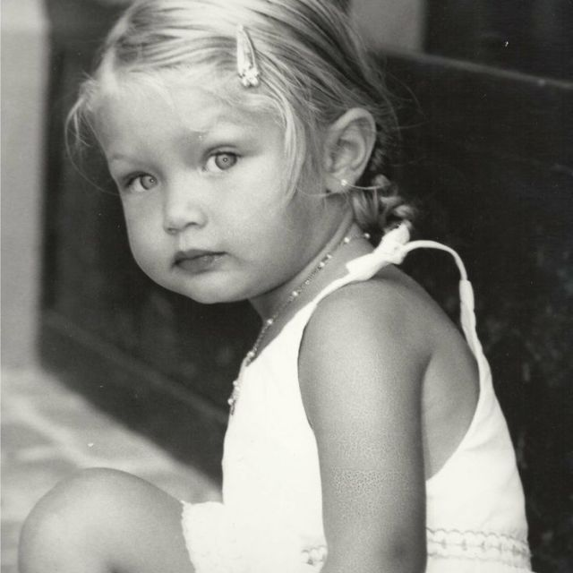
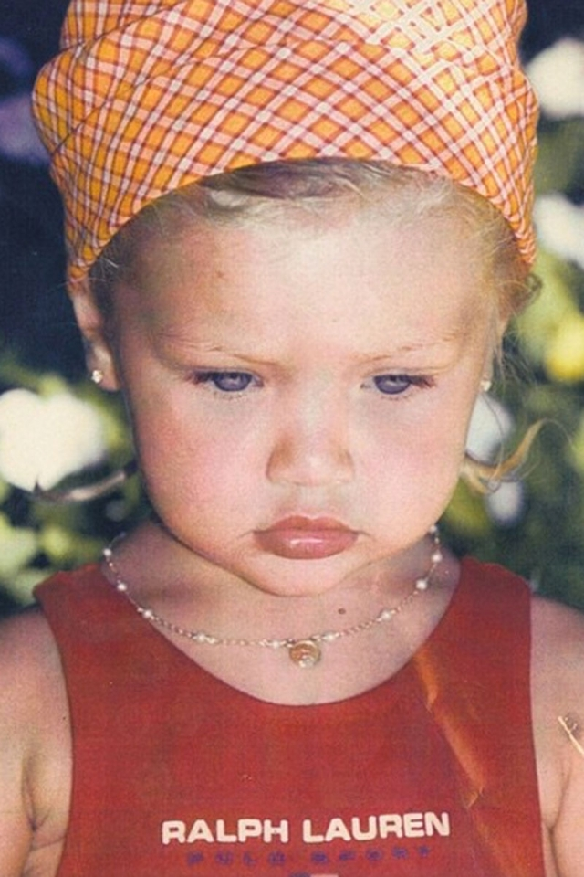
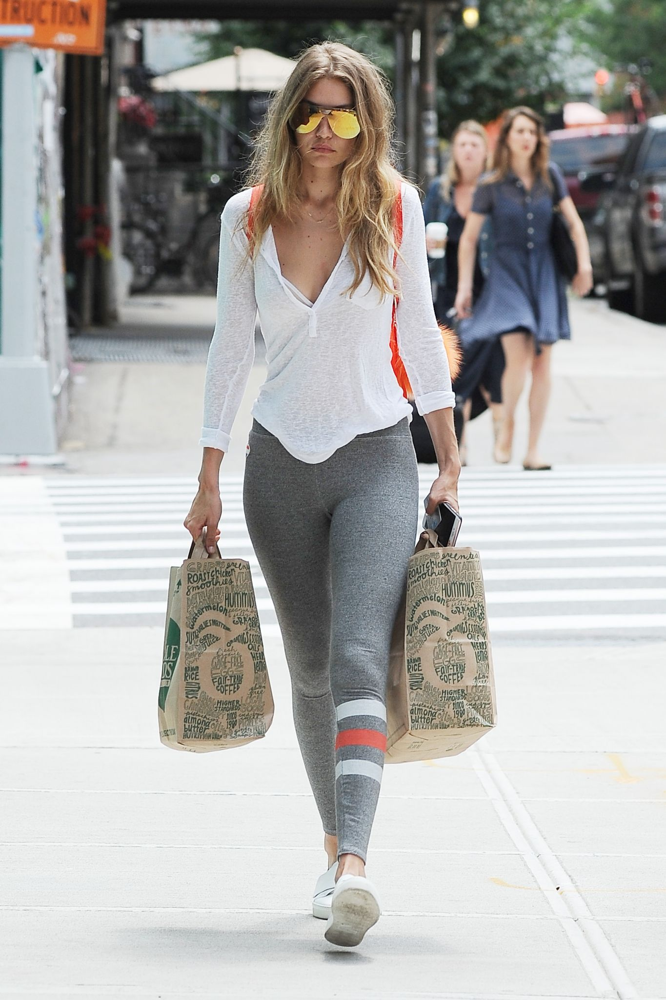
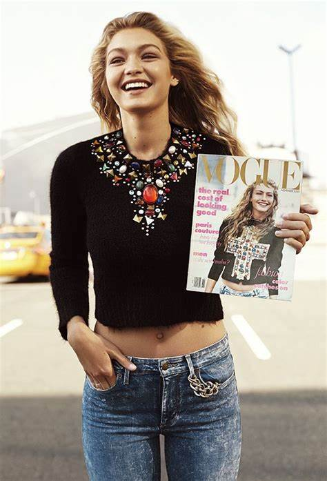

Jelena Noura Hadid (Malibu, 23 de abril de 1995) conhecida profissionalmente por Gigi Hadid, é uma supermodelo americana.
Hadid assinou um contrato com a IMG Models em 2013.[4] Foi a modelo que mais fotografou para a renomada Vogue em 2019.
Gigi Hadid nasceu e cresceu em Los Angeles.
Filha do empresário de imobiliário Mohamed Hadid e da ex-modelo Yolanda Hadid, sua mãe é americana-neerlandesa e seu pai é palestino-americano.
Hadid tem dois irmãos mais novos, uma irmã, Bella Hadid e um irmão, Anwar, ambos também modelos.


A carreira de modelagem de Hadid começou quando ela tinha dois anos[5] depois de ter sido descoberta por Paul Marciano, da Guess.
Ela começou a modelar com o Baby Guess antes de precisar parar para se concentrar na escola. Hadid finalmente retornou à modelagem, em 2011.
Ela retomou o trabalho com Marciano e foi nomeada a cara de uma campanha da Guess em 2012. Hadid filmou três campanhas com a Guess.
Depois de se mudar para a cidade de Nova York e assinar com a IMG Models em 2013, Hadid fez sua estréia na New York Fashion Week em fevereiro de 2014 desfilando para o show da Desigual.
No mesmo mês, ela fez sua pausa na Alta Costura na capa da revista CR Fashion Book.
Em 15 de julho de 2014, ela estrelou ao lado do ator e modelo Patrick Schwarzenegger na campanha Outono / Inverno de Tom Ford da Olympe de moda.
Ela co-organizou o evento Daily Front Row's Fashion Media Awards que foi realizado em Nova York em 5 de setembro de 2014.
Hadid também estrelou campanhas para Tom Ford F / W 2014, Tom Ford Velvet Orchard Fragrance e Tom Ford Beauty 2014.

